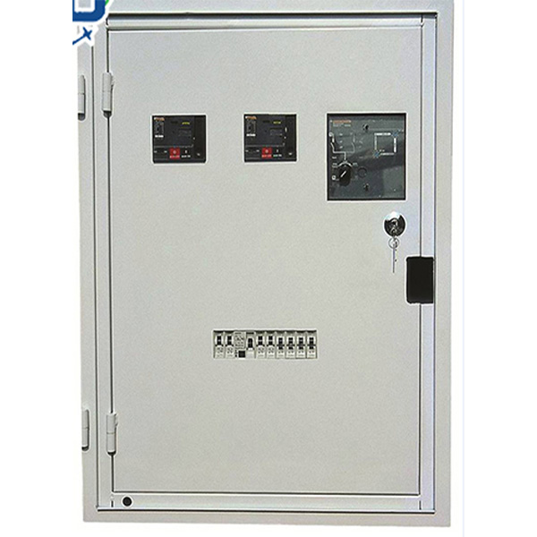
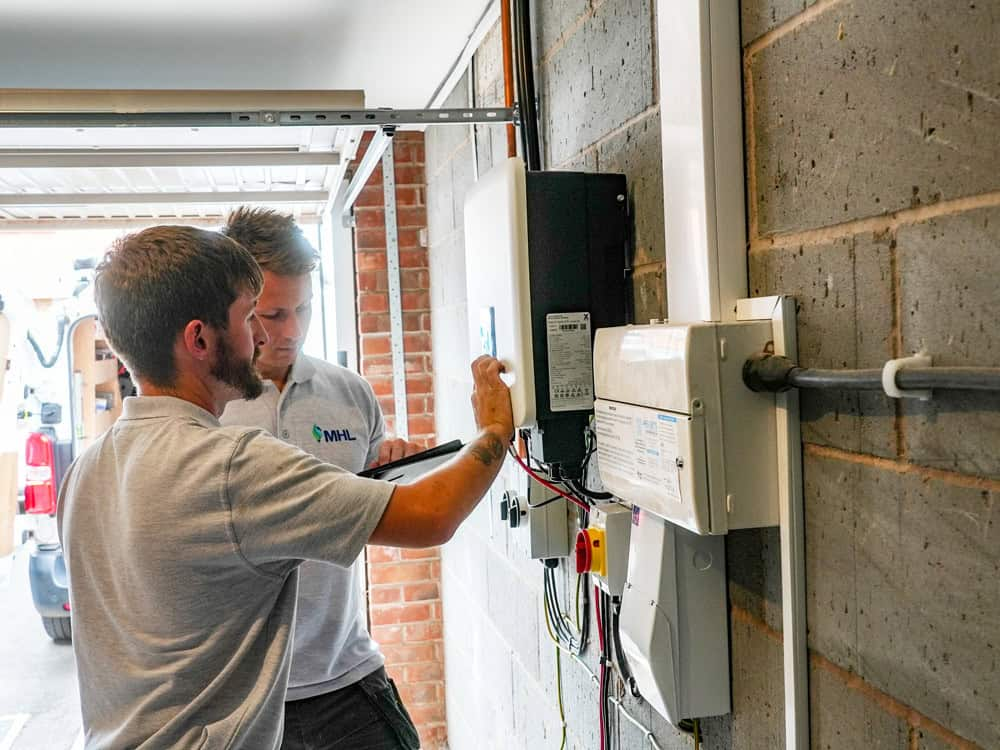

General Maintenance and Upkeep
Employers and employees must monitor equipment and machinery to watch out for loose screws, gaskets, and other pieces that may interfere with dust and explosion prevention.
This standard relates to equipment upkeep and maintenance. If employers don't inspect, repair, and upgrade their machinery, that can lead to failure and electrical injury or death. This specific standard refers to the construction industry, but the recommendations work well for all job sites.
Employers must maintain equipment so that there is little to no risk of an explosion due to electrical malfunction
Dust can get into machinery and cause various problems, both mechanical and electrical. Employers must protect all gear from dust-related incidents that could lead to an explosion or electrical arc
Employers and employees must monitor equipment and machinery to watch out for loose screws, gaskets, and other pieces that may interfere with dust and explosion prevention.
If a worker spots any issues with machinery, they have to report to a supervisor immediately. Once a report is filed, the employer must stop using the circuit until the problem is fixed.
